PAW IN
HAND
2019 / BI / UX / UI
The issue of abandoned animals, especially dogs, is a very serious problem intertwined with the problem of 'puppy factory' where they abuse dogs to get cute puppies of the dog breeds people prefer, and with the problem of dog farm. People 'buy' 2-3 months old cute puppies from pet shops which are supplied from the puppy factories without considering what it takes to have a dog as a family or how to take care of them. And when their dogs start acting in a way they don't like, they easily abandon them. It is more likely for the dogs from the puppy factories to act abnormally because they are detatched from their mothers in such an early and crucial stage of socialisation. Some of them end up in public shelters which is already highly overcrowded.
Paw in Hand
is a mobile application service founded by a vetarinarian in South Korea,
which is to help people find their lost animals and to promote
adoption of shelter animals. It provides data from shelters all over the
country on a mobile application. A lot of people have found their new family
through this app including my friend. I check this app regulrarly myself,
and found that the design of this service can be a little confusing. There are
too many steps to get to the information I want, and the identity design doesn't
have consistency. It's icon in apple appstore was in green, but the logotype
in the actual app was orange, and the main colour on the website was pink.
I started with designing a new identity for the service. I wasted to
show the feeling of warmth and care, so I chose warm yellow as the main colour.
And tried various ways to make the logotype look like cushions with heavy Bold weight.
And then I made some plans of how I want to reorganise the system of This service on paper, used apple numbers to design the Information Architecture. When I launch the app for the first time, there were just too much Informations such as news from events from the app, or news that related to shelter animals, and journals from people who adopted animals from shelter through this app. I thought this app should concentrate to promote adoption of shelter animals and help finding lost animals. But I kept the menus for community, since it's an effective tool to let people know that the shelter dogs, especially the ones that doesn't have specific breed, are just as good as the others.
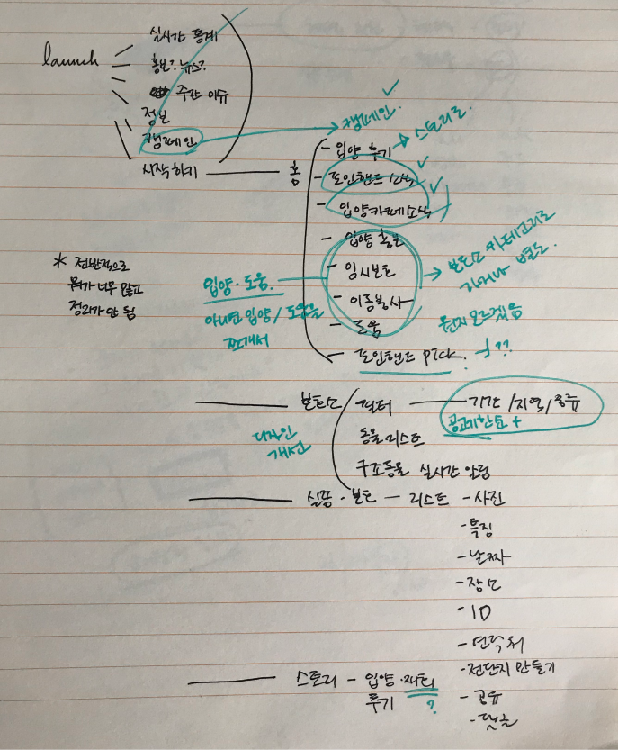 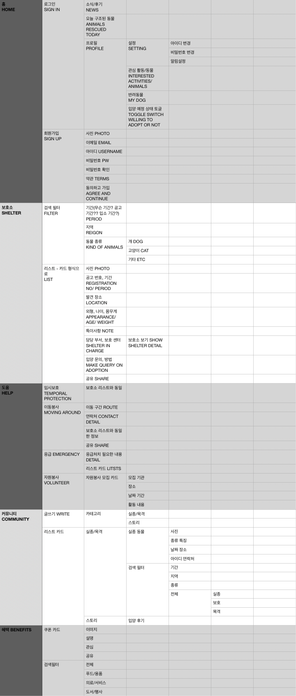Next, using Sketch IOS library, I made some wireframes to map out the structure visually. This could be changed during the process, but it helps to concentrate on the visual structure. There is another time for thinking about the graphics. Current app has both hamburger menu and tap menu on top. I changed it into bottom tap menu. They are home, shelter, volunteering, community and benefits for the occational discounts and cupons to encourage participation.
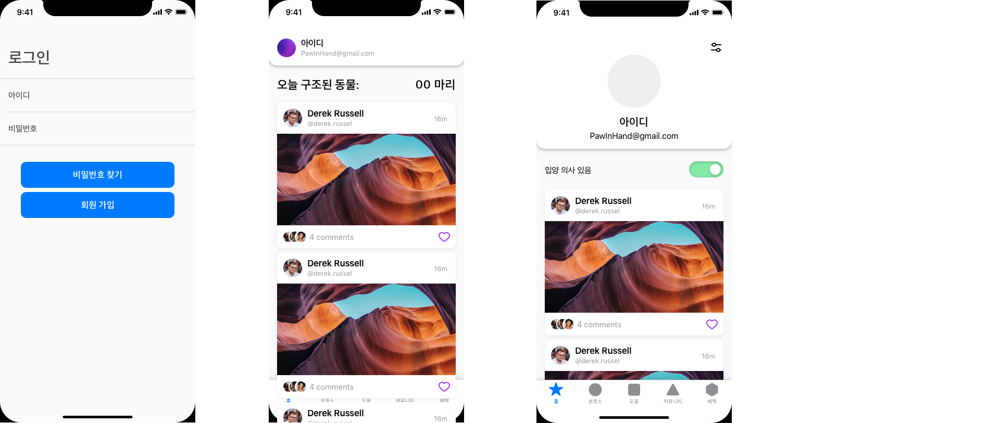 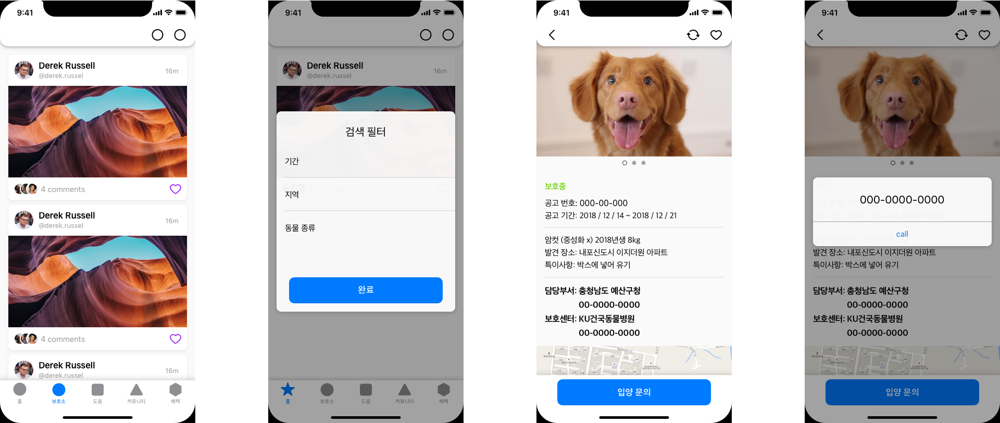 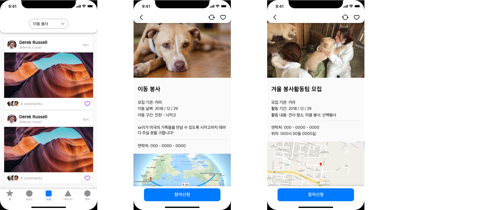 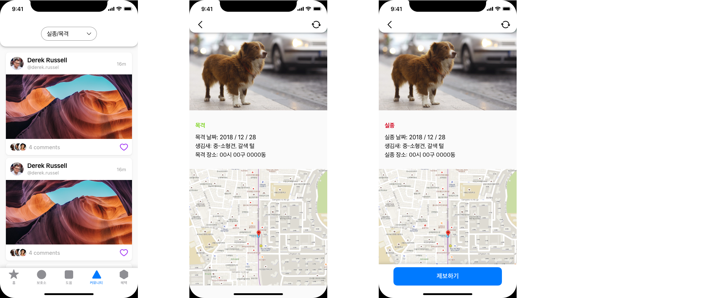And then I moved on to the grapics, starting with the icons for each tap menu. I used bold lines to match with the logotype and to make it easier to distinguish when put on tiny menu. Activated ones are with yellow and black, and deactivated ones are gray.
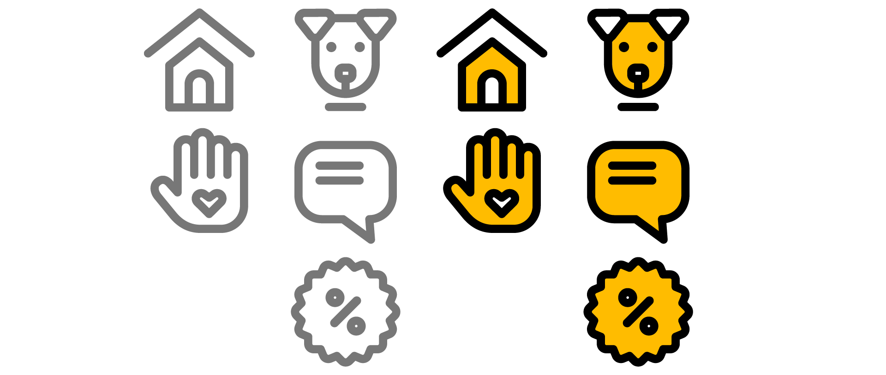Then I move on to the actual GUI design, first the launch and sign in. I simplified the step by removing the extra step that contains multiple news information and 'start paw in hand' button, and used card view of the vounteer schedules and updates of animals that I 'saved'. If it's the first time the app is launched, it shows the informations of volunteer schedules that are close to the deadline and animals that don't have much time. Statistics on the number of rescued animals still can be seen on the yellow 'show statistics of this month' menu on top.
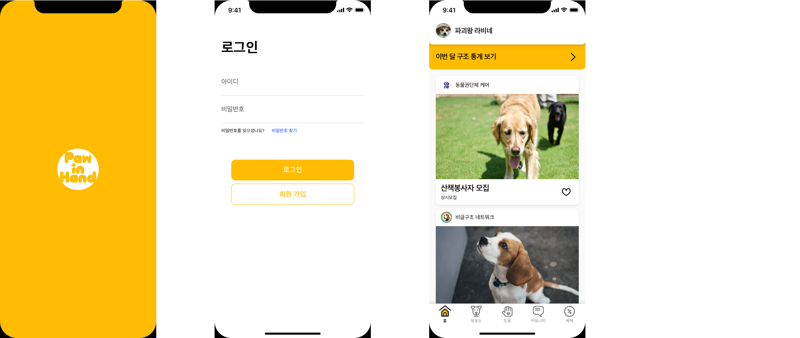In the profile section, There are three taps for saved activities, animals, and the contents that you've uploaded. You can also edit your profile by adjusting toggle settings to turn on/off the notifications for volunteer activity, missing animal alert, fundings. There is also a toggle switch that shows whether you're planning to adopt or not.
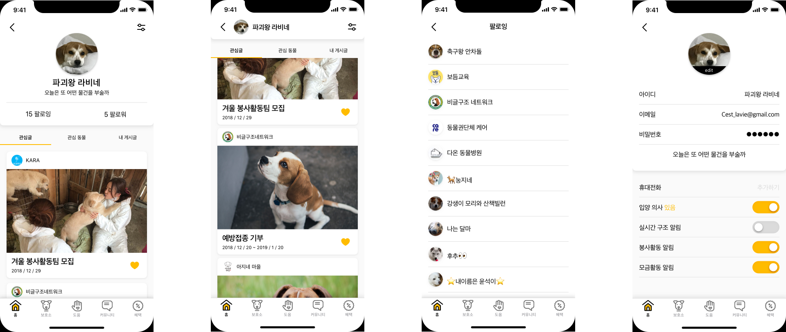When you start the adoption process, you can see the yellow 'Adoption process going on' alert. When you tap and go inside that menu, there is an overview of the entire adoption process.
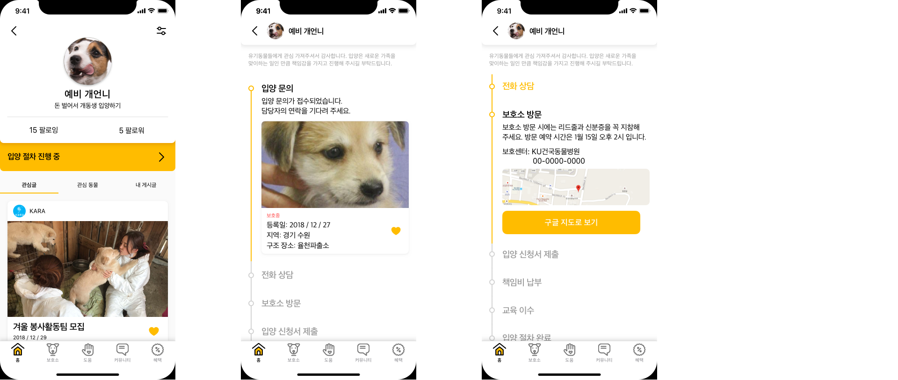 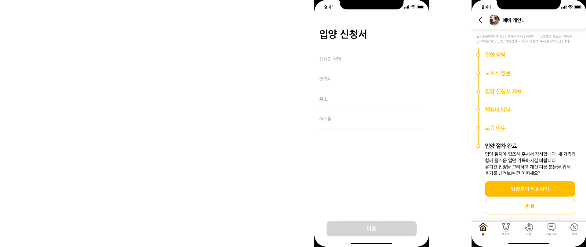Moving on to 'shelter' tap, where you can see the lists of animals in the shelter from all over the country. You can align the list items according to the reigon, the date they came in to the shelter, and the species. When you tap the list item, it shows the detail of the animal such as appearance, weight, colour. You can also see the location of the shelter they're in, and there is a button to make inquieries on the animal.
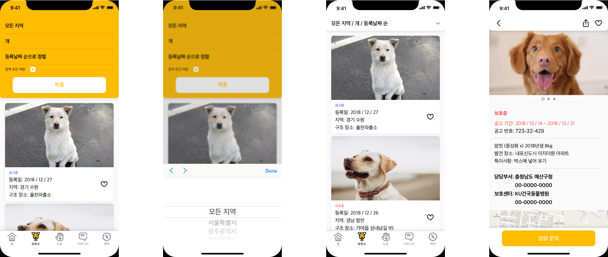And in the community tab, you can either send a notification when you see an animal that looks like it's lost or put up a post when you lost yours. On both occasion, the map data is also provided so that you can pinpoint the spot where you lost/ saw the animal. You can also share the page to let wider range of people know.
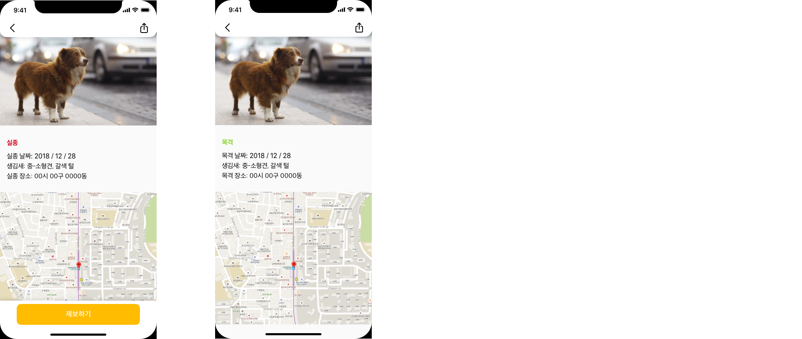